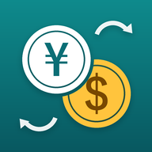

旅行用 両替電卓
旅先で見た値段を打つだけで、日本円でいくらかその場でわかる。海外旅行向けの両替電卓です。
主な機能
- 打つだけですぐ換算(「＝」を押す必要なし)
- 入れ替えボタンで「外貨→円」「円→外貨」を切り替え
- 最大5通貨を同時に表示
- ＋−×÷で計算してから換算
- 圏外でも使える(レートをスマホに保存)
- 152通貨に対応
よくある質問
両替所やカードの金額と違います
アプリに表示されるのは、市場の為替レート(仲値)にもとづく目安の金額です。両替所やクレジットカードでは手数料が上乗せされるため、実際に支払う金額とは異なります。
レートはいつ更新されますか？
レートは1日1回ほど新しくなります。アプリを開いたときに前回の読み込みから6時間以上たっていれば、最新のレートを自動で読み込みます。画面右上の更新ボタン(矢印が回るマーク)を押せば、いつでも読み込み直せます。レートの日付は画面の左上に表示されます。
通信できない場所でも使えますか？
使えます。一度読み込んだレートはスマホに残るので、機内や地下でも換算できます。アプリには最初からレートが入っているため、インストールしてすぐ圏外になっても使えます。
機種を変えたら広告が出るようになりました
アプリの「設定 > 購入を復元」をタップしてください。同じ Apple ID / Google アカウントで購入していれば、広告は表示されなくなります。
広告の設定を変えたい
iOS では「設定 > プライバシーとセキュリティ > トラッキング」から変更できます。欧州などの地域では、アプリの「設定 > 広告のプライバシー設定」からも変更できます。
お問い合わせ
不具合の報告やご要望は、お問い合わせフォームからお送りください。返信が必要な場合は、フォームに返信先のメールアドレスをご記入ください。
為替レートの出典:fawazahmed0/exchange-api、Rates By Exchange Rate API。表示するレートは目安であり、正確さを保証するものではありません。